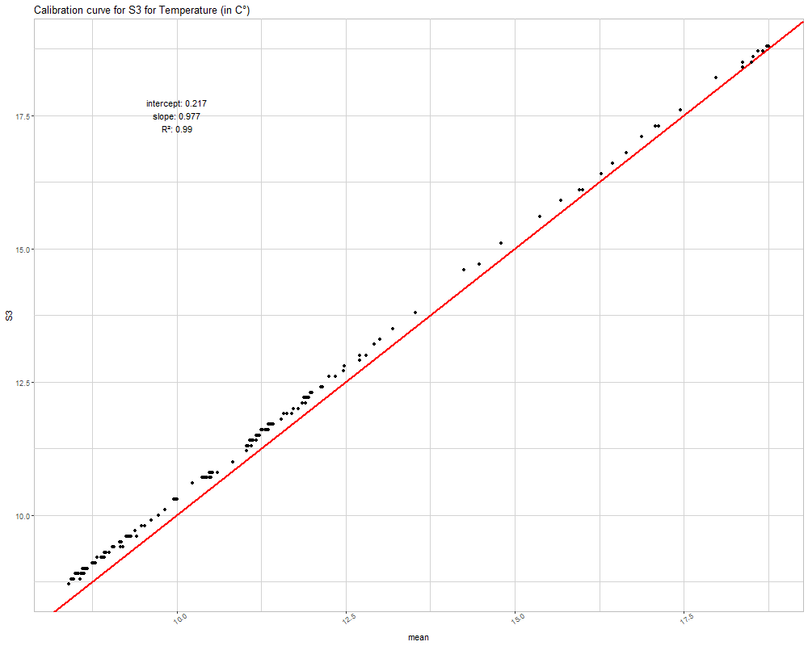
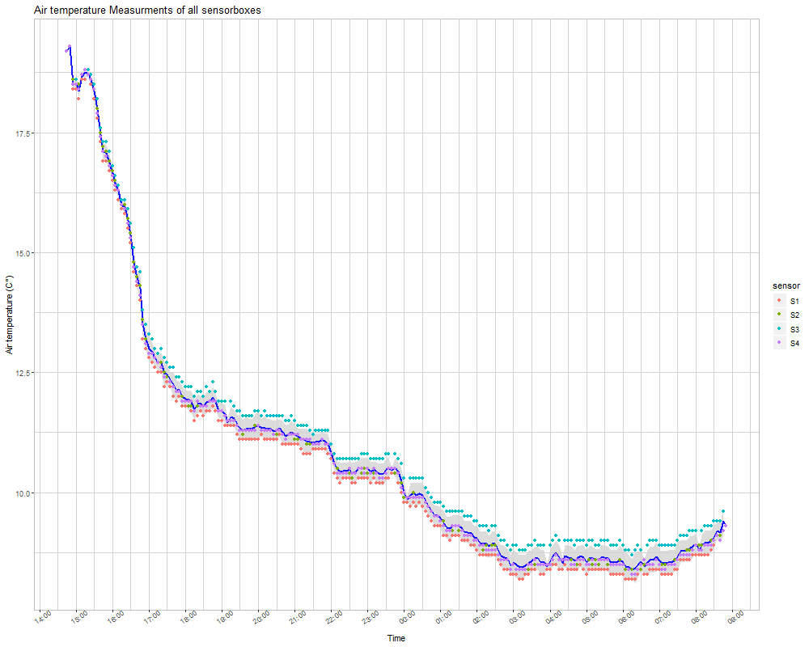

In a simple test run of our sensorboxes we placed all of them next to each other overnight. In total, we placed six boxes. One box showed issues in saving the data to disk, so we could not include it's results in the analysis. Another box did not collect temperature and humidity data, so we only have 4 boxes to compare the measurements for these two variables. The illuminance sensor worked for all boxes, but since we made our test run overnight, there are not as many observations to compare.
The following plot shows the measurement of four different sensorboxes for the variable air temperature. The specific measurements are indicated by dots, the blue line indicates the mean of all measurements at a specific time step and the grey ribbon indicates the standard deviation from the mean value.

The sensors show a greater level of agreement at the beginning of the measurement sequence. After three hours and with temperatures below 14 °C the differences between the measured temperature increases. While S2 and S4 generally are closer to the mean value, S3 measures constantly higher values while S1 measures lower values compared to the mean.
RMSE between temperature measurements
| Sensors | S1 | S2 | S3 | S4 |
|---|---|---|---|---|
| S1 | 0 | 0.17 | 0.52 | 0.17 |
| S2 | 0.17 | 0 | 0.36 | 0.06 |
| S3 | 0.52 | 0.36 | 0 | 0.37 |
| S4 | 0.17 | 0.06 | 0.37 | 0 |
This is also indicated by the RMSE comparison between the sensors. While S2 and S4 only show an RMSE of 0.06°C, S3 has an RMSE of about 0.36°C to S2 and S4 and even 0.52°C to S1. The RMSE between S1 and S2 and S4 is comparatively low with only 0.17°C. This analysis shows that S3 most probably should be replaced if RMSE below 0.5°C is desired. Another option could be to calculate a calibration curve for the specific sensor since the correlation coefficients to the over sensors are around 0.99, indicating that the measurement of temperature differences works properly. Only the assignment to specific temperature values does not work correctly which could be compensated for by applying a calibration function.
An exemplary calibration of sensor S3 for the variable air temperature would look like this:
The measurement of the relative air humidity shows a similar pattern of sensor differences like the temperature. The first three hours of the measurement, the level of agreement between the sensor is higher than after 5 pm. However, compared to the temperature measurements, even within the first three hours the standard deviation of the mean is with approximately +-2.5% substantially larger than the standard deviation of the temperature. The standard deviation of the measurements increases over time and reaches a level of +- 5%.

A similar pattern in the differences between the sensors compared to the temperature measurements can be observed. S2 and S4 measurements are very similar and close to the mean, even though towards the end of the measurement period their differences increase. S1 constantly measures higher relative humidity values while S3 constantly measures lower relative humidity values. This pattern is opposed to the pattern in temperature which makes a case because with lower temperatures and constant humidity the relative humidity increases.
RMSE between relative humidity measurements
| Sensors | S1 | S2 | S3 | S4 |
|---|---|---|---|---|
| S1 | 0 | 4.52 | 8.55 | 4.27 |
| S2 | 4.52 | 0 | 4.1 | 0.49 |
| S3 | 8.55 | 4.1 | 0 | 4.41 |
| S4 | 4.27 | 0.49 | 4.41 | 0 |
Again, while S2 and S4 only show a RMSE of about 0.5%, S1 and S3 show an RMSE of about 4.4% to S2 and S4 and about the double to each other (8.55%). Both, S1 and S3 either need a replacement or a sensor specific calibration curve should be calculated.
Since we started our measurements in the afternoon and ended it around 9 am the next morning, most of the measurements of illuminance are equal or close to 0 lx. However, during the illuminated hours the sensors show a great level of agreement though the standard deviation is higher in the morning hours compared to the evening. S1 and S3 however, seem to have produced some significant outliers. The data at hand though is not enough to evaluate this assumption. Another measurement campaign during daylight would be needed to generate further insights of the differences between the sensors.

Audio File with birds & some basic explanation and link to automated bird species classification
Sample picture(s) and some basic explanation and link to automated classification of forest images